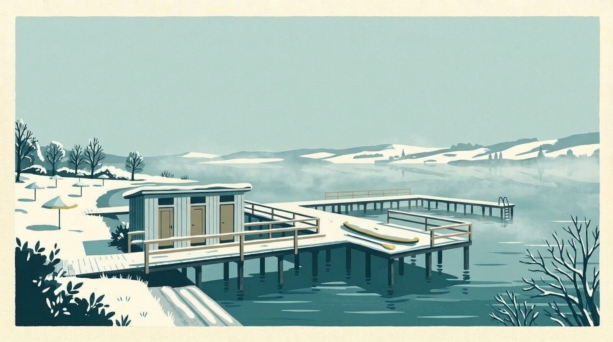

En bref
En février, l’eau la moins froide est en moyenne celle du lac Majeur (7,9 °C), la plus froide celle du lac de Joux (0,6 °C). Les grands lacs profonds gardent leur chaleur plus longtemps.
Janvier
- Lac Majeur : 8,7 °C
- Lac de Lugano : 7,6 °C
- Léman : 7,5 °C
- Lac des Quatre-Cantons : 7,3 °C
- Lac de Neuchâtel : 7,2 °C
- Lac de Thoune : 6,8 °C
- Lac de Brienz : 6,6 °C
- Lac de Zurich : 6,4 °C
- Lac de Zoug : 6,4 °C
- Lac de Morat : 6,1 °C
- Lac de Bienne : 6,0 °C
- Lac de Hallwil : 6,0 °C
- Lac de Sempach : 6,0 °C
- Lac de Constance : 6,0 °C
- Lac de Baldegg : 5,9 °C
- Lac de la Gruyère : 5,2 °C
- Greifensee : 5,2 °C
- Lac d’Ägeri : 5,1 °C
- Lac de Constance – Untersee : 4,8 °C
- Lac de Sarnen : 3,7 °C
- Lac de Bret : 3,0 °C
- Lac de Joux : 1,6 °C
- Lac de Silvaplana : 0,7 °C
Février
- Lac Majeur : 7,9 °C
- Léman : 7,0 °C
- Lac de Lugano : 7,0 °C
- Lac des Quatre-Cantons : 6,8 °C
- Lac de Neuchâtel : 6,7 °C
- Lac de Thoune : 6,3 °C
- Lac de Brienz : 6,3 °C
- Lac de Zurich : 5,9 °C
- Lac de Zoug : 5,9 °C
- Lac de Sempach : 5,6 °C
- Lac de Constance : 5,5 °C
- Lac de Bienne : 5,4 °C
- Lac de Baldegg : 5,4 °C
- Lac de Hallwil : 5,3 °C
- Lac de Morat : 5,2 °C
- Lac d’Ägeri : 4,7 °C
- Lac de la Gruyère : 4,6 °C
- Lac de Sarnen : 4,5 °C
- Lac de Constance – Untersee : 4,5 °C
- Greifensee : 4,4 °C
- Lac de Bret : 2,5 °C
- Lac de Silvaplana : 0,9 °C
- Lac de Joux : 0,6 °C
Moyennes journalières à 70 cm sous la surface, une valeur pour tout le lac, années 2023–2025 (modèle Simstrat d’Alplakes, Eawag). Près du bord et par beau temps, l’eau peut être plus chaude.
Quel que soit le lac, un bain d’hiver se prépare : les 90 premières secondes, un programme de 4 semaines.
L’eau du Léman en ce moment
La température de chaque plage est dans l’app Mon Lac, mise à jour toutes les trois heures.
Avertissement. Cet article donne des informations générales tirées des sources citées ; il ne remplace pas un avis médical. La baignade en eau froide sollicite fortement le cœur et peut être dangereuse : demandez conseil à un médecin avant de commencer, en particulier en cas de problème cardiaque, de tension ou de grossesse. Ne vous baignez jamais seul et respectez les consignes des sauveteurs. Chacun pratique sous sa propre responsabilité ; en cas d’urgence, appelez le 144 en Suisse ou le 112.